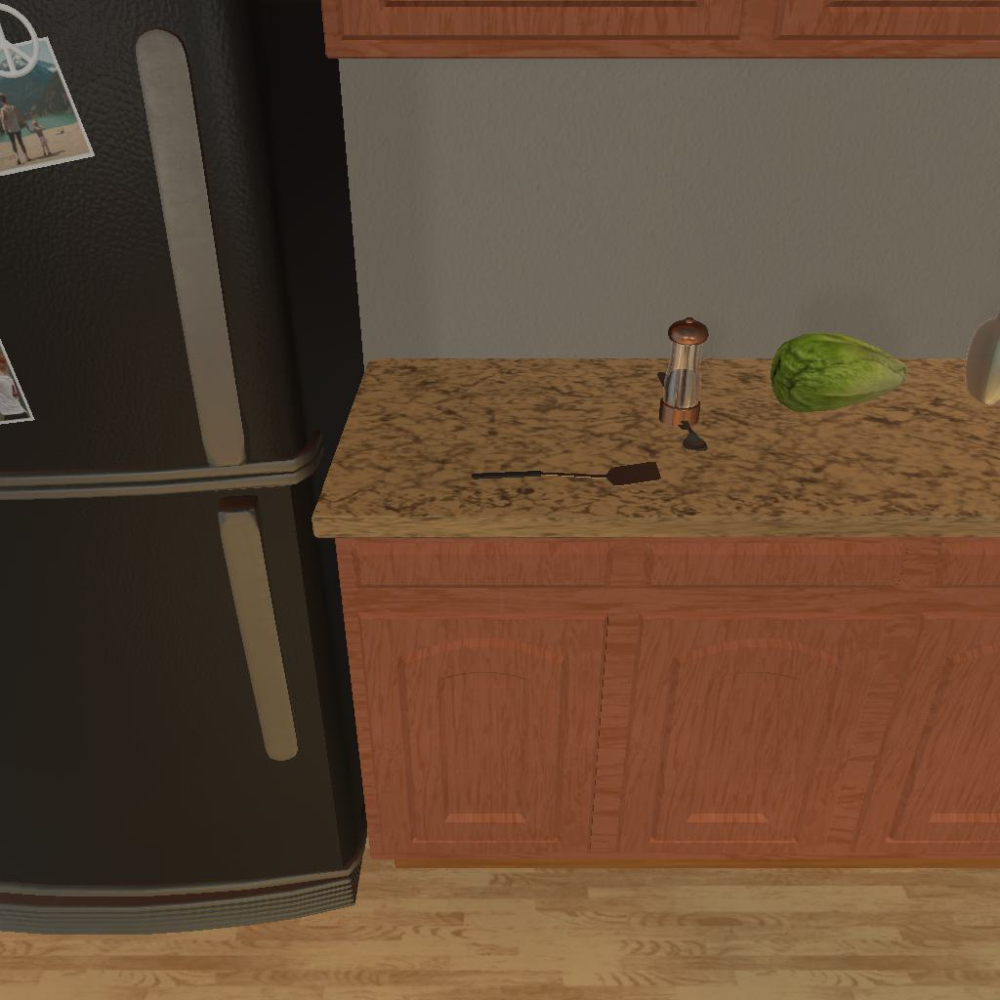
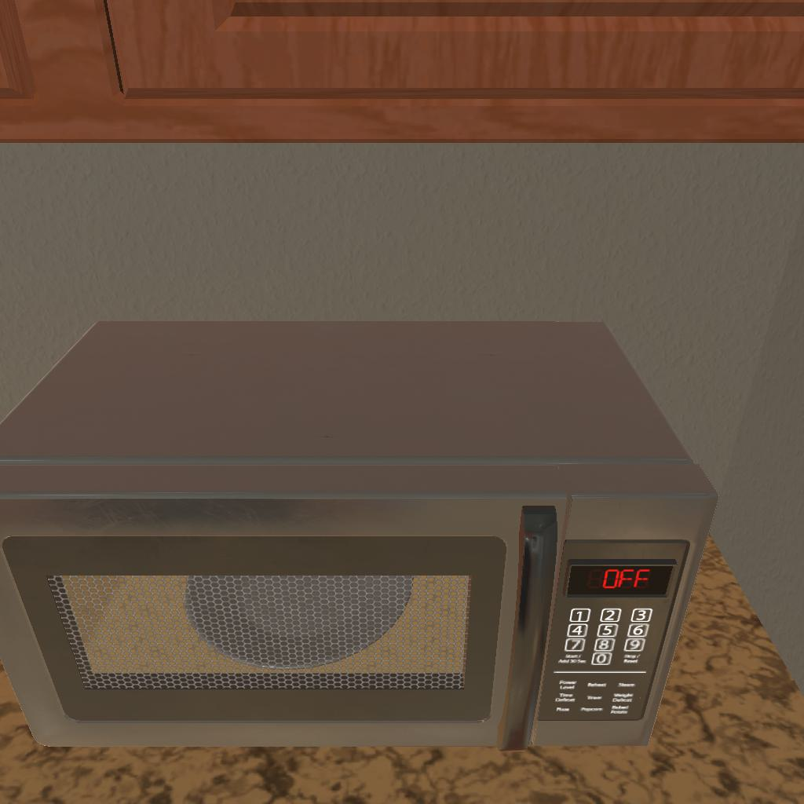

---------------------------------------------------------task: 23---------------------------------------------------------
--------------------------------------------------------------------------------------------------------------------------------------------------------------------
--------------------------------------------------------------------------------------------------------------------------------------------------------------------
Step:--------------------------------------------------------------------------15-------------------------------------------------------------------------------
----------------------------------------
VLM Prompt:
Image1:
Image2:
**Instruction**
1. Analyze the provided images to identify all visible household objects and compare the difference between images (e.h. whether the object is opened or not and taken on hand or not), focusing on those relevant to the task description "put a hot mug in coffeemachine."
2. Use the analysis of images and the task hint "The agent must find an object of the desired type, pick it up, go to a microwave, heat the object with the microwave, then find the correct location to place it, and put it down there. The agent does not need to use the microwave button or open the microwave to heat the object, and the agent just needs to do action that is "heat the object with the microwave"." to answer the question: what is the most reasonable action in the choices for the task description "put a hot mug in coffeemachine"?
3. Decide and write the answer using the template: The answer is: (i): , where i is the real number. If there is no desired object in images, search every place based on **Initial Observation** to find the object. And if no one is exactly correct, choose a similar answer.
**Initial Observation**
You are in the middle of a room. Looking quickly around you, you can see cabinet (1-15), fridge (1), countertop (1-4), drawer (1-4), microwave (1), toaster (1), coffeemachine (1), garbagecan (1), sink (1), stoveburner (1-3), sinkbasin (1)
**Answer Choices**
(1): go to cabinet 1
(2): go to cabinet 2
(3): go to fridge 1
(4): go to countertop 1
(5): go to cabinet 5
(6): go to cabinet 6
(7): go to cabinet 7
(8): go to drawer 1
(9): go to drawer 2
(10): go to cabinet 8
(11): go to drawer 3
(12): go to cabinet 9
(13): go to cabinet 10
(14): go to drawer 4
(15): go to cabinet 11
(16): go to toaster 1
(17): go to cabinet 12
(18): go to cabinet 13
(19): go to cabinet 14
(20): go to cabinet 15
(21): go to countertop 2
(22): go to coffeemachine 1
(23): go to garbagecan 1
(24): go to countertop 3
(25): go to countertop 4
(26): go to sink 1
(27): go to stoveburner 1
(28): go to stoveburner 2
(29): go to stoveburner 3
(30): go to sinkbasin 1
(31): open microwave 1
(32): close microwave 1
(33): examine microwave 1
**Answer**
Let's think step by step by following the instructions.
----------------------------------------
----------------------------------------
Original Response:
First, we analyze the provided images:
Image1: We can see a countertop with a coffee grinder, a piece of chocolate, and a green mug. The cabinet above the countertop is closed, and the fridge beside it is also closed.
Image2: We have a close-up of a microwave on a countertop. The microwave is currently off, and its door is closed.
Now, let's apply this to the task description "put a hot mug in coffeemachine." We need to find a mug, heat it, and then place it in the coffeemachine. According to the task hint, we do not need to interact with the microwave buttons or door to heat the object.
From the Initial Observation, we know the locations of various objects and appliances in the room. Since we already see a mug in Image1 on countertop 1 and no mug is visible inside the microwave in Image2, we can deduce that the mug has not been heated yet.
Given that the task does not require us to open the microwave, the next reasonable action would be to "heat the object with the microwave," but since this option is not available, we need to choose an action that would imply heating the mug without interaction with the microwave.
Since none of the answer choices directly indicate heating the mug, and only one choice is related to the microwave, the closest reasonable action would be to go to the microwave as the first step in heating the mug. Therefore:
The answer is: (31): open microwave 1.
----------------------------------------
----------------------------------------
>>> Refine Original VLM Response and Get Pure Action: open microwave 1
----------------------------------------
-----------------------------------------------------------------
Running time: 14.986218452453613 seconds
Total Money: 11.940530000000003
-----------------------------------------------------------------
-----------------------------------------------------------------
Text Observation:You open the microwave 1. The microwave 1 is open. In it, you see nothing.
-----------------------------------------------------------------
UNSUCCEED